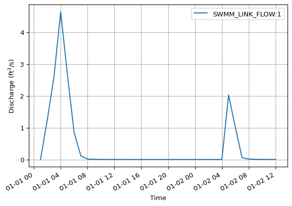
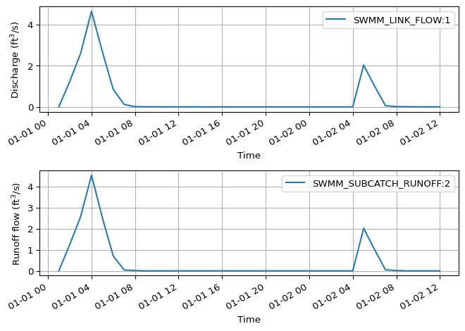

import mikeio1dSWMM - basic
Extract SWMM results for a collection system to a pandas DataFrame.
Overview
Tip
MIKE IO 1D treats SWMM and Res1D results in the same way, so you may also refer to Res1D examples.
res = mikeio1d.open("../data/swmm.out")
res.info()Start time: 1998-01-01 01:00:00.001000
End time: 1998-01-02 12:00:00.001000
# Timesteps: 36
# Catchments: 8
# Nodes: 14
# Reaches: 13
# Globals: 15
0 - Water depth (ft)
1 - Hydraulic head (ft)
2 - Volume stored & ponded (ft^3)
3 - Lateral inflow rate (ft^3/s)
4 - Total inflow rate (ft^3/s)
5 - Overflow rate (ft^3/s)
6 - TSS concentration (mu-g/l)
7 - Discharge (ft^3/s)
8 - Water Depth (ft)
9 - Velocity (ft/s)
10 - Volume (())
11 - Capacity (())
12 - TSS concentration (mu-g/l)
13 - Rainfall intensity (in/h)
14 - Snow depth (in)
15 - Evap loss (in)
16 - Infil loss (in/h)
17 - Runoff flow (ft^3/s)
18 - Groundwater flow (ft^3/s)
19 - Elevation of saturated gw table (ft)
20 - Soil moisture (())
21 - TSS Washoff (mu-g/l)
22 - Air temperature (deg F)
23 - Rainfall intensity (in/h)
24 - Snow depth (in)
25 - Infil (in/h)
26 - Runoff flow (ft^3/s)
27 - Dry weather inflow (ft^3/s)
28 - Ground water inflow (ft^3/s)
29 - RDII inflow (ft^3/s)
30 - External inflow (ft^3/s)
31 - Total lateral inflow (ft^3/s)
32 - Flooding outflow (ft^3/s)
33 - Outfall outflow (ft^3/s)
34 - Storage volume (ft^3)
35 - Evaporation (-)
36 - Potential ET (-)Plot network
ax = res.reaches.to_geopandas().plot()
res.nodes.to_geopandas().plot(ax=ax)
res.catchments.to_geopandas().plot(ax=ax, alpha=0.5)Explore network
res.reaches
<ResultReaches> (13)
Quantities (6)
- Discharge (ft^3/s)
- Water Depth (ft)
- Velocity (ft/s)
- Volume (())
- Capacity (())
- TSS concentration (mu-g/l)
Derived Quantities (0)
res.nodes
<ResultNodes> (14)
Quantities (7)
- Water depth (ft)
- Hydraulic head (ft)
- Volume stored & ponded (ft^3)
- Lateral inflow rate (ft^3/s)
- Total inflow rate (ft^3/s)
- Overflow rate (ft^3/s)
- TSS concentration (mu-g/l)
Derived Quantities (0)
res.catchments
<ResultCatchments> (8)
Quantities (9)
- Rainfall intensity (in/h)
- Snow depth (in)
- Evap loss (in)
- Infil loss (in/h)
- Runoff flow (ft^3/s)
- Groundwater flow (ft^3/s)
- Elevation of saturated gw table (ft)
- Soil moisture (())
- TSS Washoff (mu-g/l)
Derived Quantities (0)
Extract results to a DataFrame
df = res.read()
df.head()| SWMM_NODE_DEPTH:9 | SWMM_NODE_HEAD:9 | SWMM_NODE_VOLUME:9 | SWMM_NODE_LATFLOW:9 | SWMM_NODE_INFLOW:9 | SWMM_NODE_OVERFLOW:9 | SWMM_NODE_QUAL:9 | SWMM_NODE_QUAL:9 | SWMM_NODE_DEPTH:10 | SWMM_NODE_HEAD:10 | ... | SWMM_SYS_DWFLOW | SWMM_SYS_GWFLOW | SWMM_SYS_IIFLOW | SWMM_SYS_EXFLOW | SWMM_SYS_INFLOW | SWMM_SYS_FLOODING | SWMM_SYS_OUTFLOW | SWMM_SYS_STORAGE | SWMM_SYS_EVAP | SWMM_SYS_PET | |
|---|---|---|---|---|---|---|---|---|---|---|---|---|---|---|---|---|---|---|---|---|---|
| 1998-01-01 01:00:00.001 | 0.000000 | 1000.000000 | 0.0 | 0.000000 | 0.000000 | 0.0 | 0.000000 | 0.000000 | 0.000000 | 995.000000 | ... | 0.0 | 0.0 | 0.0 | 0.0 | 0.000000 | 0.000000 | 0.000000 | 0.000000 | 0.0 | 0.0 |
| 1998-01-01 02:00:00.001 | 0.288774 | 1000.288757 | 0.0 | 1.239633 | 1.239633 | 0.0 | 15.720075 | 3.144015 | 0.520309 | 995.520325 | ... | 0.0 | 0.0 | 0.0 | 0.0 | 6.216826 | 0.000000 | 6.128909 | 1656.397217 | 0.0 | 0.0 |
| 1998-01-01 03:00:00.001 | 0.418453 | 1000.418457 | 0.0 | 2.595429 | 2.595429 | 0.0 | 15.389509 | 3.077902 | 3.000000 | 998.000000 | ... | 0.0 | 0.0 | 0.0 | 0.0 | 13.030855 | 0.521967 | 12.470544 | 2796.561035 | 0.0 | 0.0 |
| 1998-01-01 04:00:00.001 | 0.567633 | 1000.567627 | 0.0 | 4.645479 | 4.645479 | 0.0 | 14.810841 | 2.962168 | 3.000000 | 998.000000 | ... | 0.0 | 0.0 | 0.0 | 0.0 | 24.252975 | 4.511855 | 19.521162 | 3780.683594 | 0.0 | 0.0 |
| 1998-01-01 05:00:00.001 | 0.425047 | 1000.425049 | 0.0 | 2.675368 | 2.675368 | 0.0 | 14.338782 | 2.867756 | 3.000000 | 998.000000 | ... | 0.0 | 0.0 | 0.0 | 0.0 | 14.172027 | 0.555154 | 13.623661 | 2913.430420 | 0.0 | 0.0 |
5 rows × 298 columns
df = res.reaches['1'].SWMM_LINK_FLOW.read()
df.head()| SWMM_LINK_FLOW:1 | |
|---|---|
| 1998-01-01 01:00:00.001 | 0.000000 |
| 1998-01-01 02:00:00.001 | 1.235769 |
| 1998-01-01 03:00:00.001 | 2.593548 |
| 1998-01-01 04:00:00.001 | 4.638623 |
| 1998-01-01 05:00:00.001 | 2.675184 |
Plot results
res.reaches['1'].SWMM_LINK_FLOW.plot()
import matplotlib.pyplot as plt
fig, ax = plt.subplots(2)
res.reaches['1'].SWMM_LINK_FLOW.plot(ax=ax[0])
res.catchments['2'].SWMM_SUBCATCH_RUNOFF.plot(ax=ax[1])
plt.tight_layout()